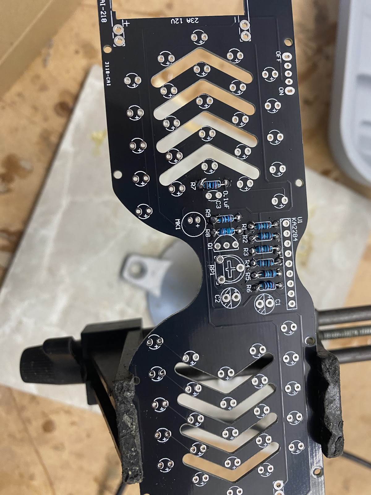
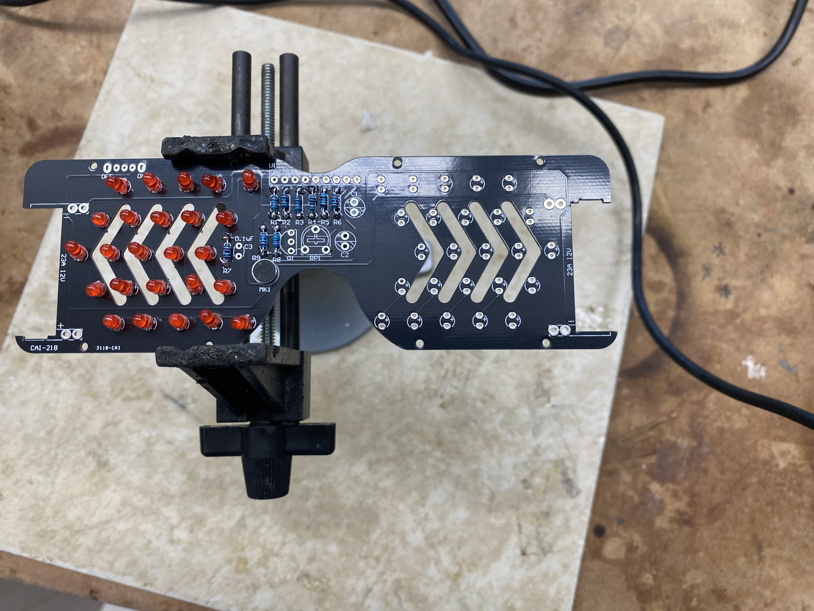
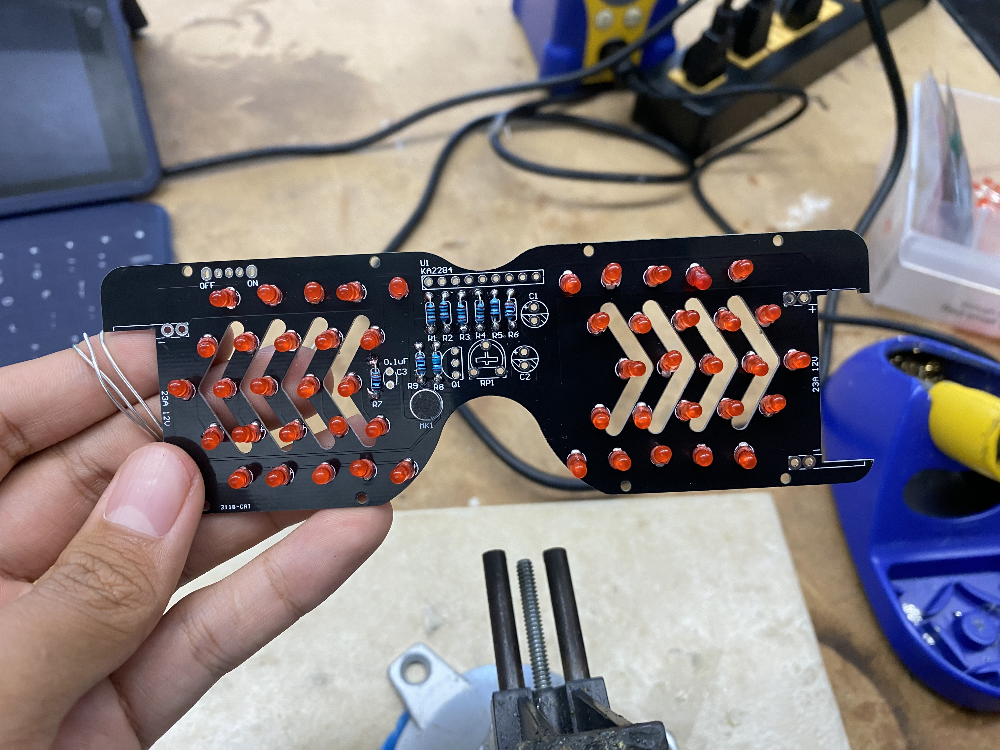
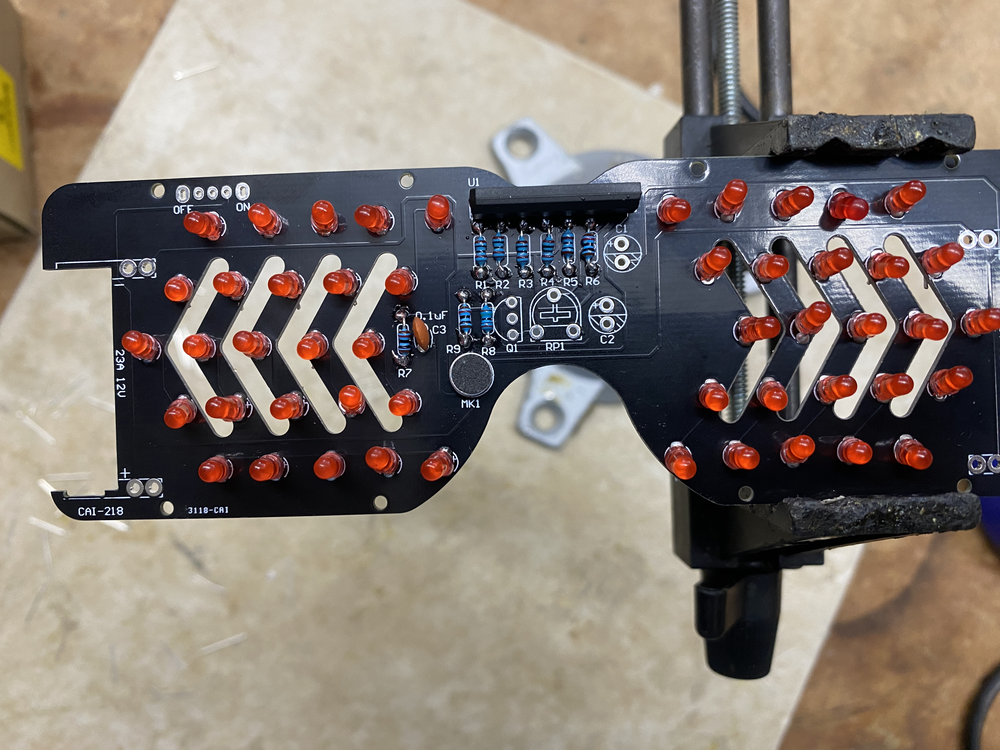
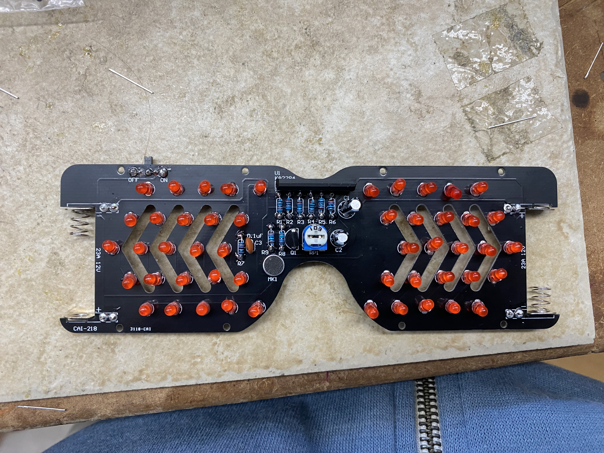

Flashing Glasses
I built a pair of glasses with LEDs and sound sensors. The LEDs would flash in a pattern and change their states based on how much sound input was around the user (how much sound the microphone picked up). The kit can be found at the manufacturer's website.
Materials
The included materials in the kit are: - 1 KA2284 LED Driver - 5 1K Ohm Metal Film Resistors - 3 10K Ohm Metal Film Resistors - 1 2M Ohm Metal Film Resistors - 1 Potentiometer - 1 Ceramic Capacitor - 2 Electrolytic Capacitors - 1 S9014 Transistor - 50 LEDs - 1 MIC-6022 Microphone - 1 SK12D07 Toggle Switch - 4 Battery Holding Metal Sheets - 8 Screws - Plastic Glasses Casing - 2 23A 12V Batteries - 1 Screwdriver - 1 PCB
Assembly
I first soldered on the 1k, 10k, and 2M ohm resistors, respectively.

I then soldered on the microphone and started on the LEDs.

Here is what the glasses looked like after all the LEDs had been put in place:

Next, I installed the 0.1uF 104 capacitor and LED driver.

Then, I soldered on the transistor, 10uF electrolytic capacitors, and potentiometer. After adding the switch and battery holders, the board is complete.

After putting the board into the plastic frame, this is what the completed glasses look like: